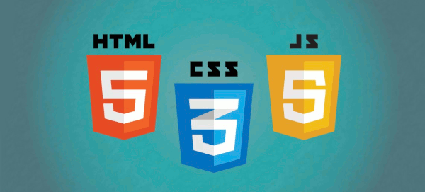

![The Ultimate HTML 5 Cheat Sheet [Infographic]](https://1adn3cp4l2-flywheel.netdna-ssl.com/wp-content/uploads/2017/09/html-chatsheet.jpg)

Чтобы лучше понимать Web-часть нужно хорошо изучить для начала как минимум три направления:
На самом деле еще нужно изучить Php и Apache Tomcat и различные фреймворки. Плюс нужно понимать как разрабатывать дизайн сайтов, что с чем сочитается и как будет красивее xD
Здесь я постараюсь периодически выкладывать некое подобие справочника с различными примерами и наработками.
Для начала нужно достаточно хорошо знать html, потому что это база. Так же после изучения css и js нужно будет задуматься о изучении HTML5.
HTML (от англ. HyperText Markup Language — «язык гипертекстовой разметки») — стандартизированный язык разметки документов во Всемирной паутине. Большинство веб-страниц содержат описание разметки на языке HTML (или XHTML). Язык HTML интерпретируется браузерами; полученный в результате интерпретации форматированный текст отображается на экране монитора компьютера или мобильного устройства. ©Wikipedia
Здесь можно посмотреть некоторые примеры html.